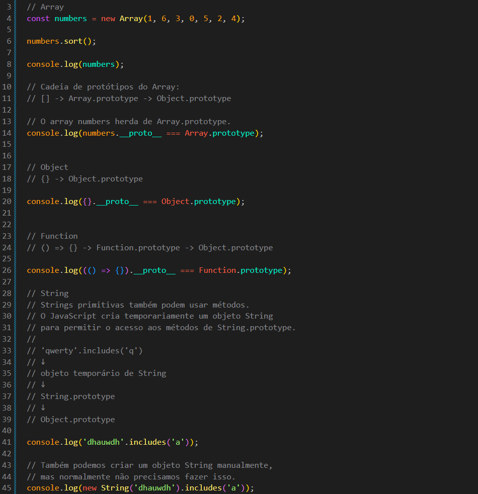
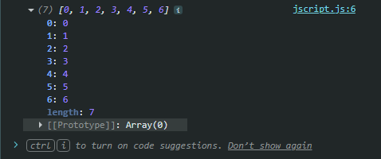

Built-in Prototypes
Intro
Aqui veremos de onde vêm os métodos que usamos em arrays, objetos, strings e funções.
Aqui veremos de onde vêm os métodos que usamos em arrays, objetos, strings e funções.
JS:

Para entendermos melhor, vamos começar com o seguinte código:
const numbers = [1, 6, 3, 0, 5, 2, 4]; numbers.sort(); console.log(numbers);
Aqui usamos o método sort() para ordenar o array.
Mas de onde veio o método sort()?

O que é um Prototype?
Prototype é um objeto que pode ser usado como fonte de propriedades e métodos para outros objetos.
Quando criamos um array, ele possui uma ligação com Array.prototype. É nesse objeto que ficam vários métodos que podemos usar nos arrays.
Por isso conseguimos fazer:
numbers.sort();
O método sort() não precisa estar escrito dentro do objeto numbers. O JavaScript procura o método no prototype que o array herdou.
A criação de um array também pode ser feita usando o constructor Array:
const numbers = new Array(1, 6, 3, 0, 5, 2, 4); numbers.sort(); console.log(numbers);
Nesse caso usamos new Array() para criar um novo array através da função construtora Array.
A forma com colchetes:
const numbers = [1, 6, 3, 0, 5, 2, 4];
é a forma mais comum e prática de criar um array.
A função construtora Array possui uma propriedade chamada prototype.
Podemos visualizar esse prototype com:
console.log(Array.prototype);
No console veremos um objeto que contém vários métodos disponíveis para os arrays.
Por isso, quando criamos um array, ele consegue utilizar métodos como sort(), push(), pop(), map(), filter() e vários outros.
Ideia principal:
Quando um objeto é criado por uma função construtora, ele pode herdar propriedades e métodos do prototype dessa função.
Podemos verificar de qual prototype um objeto está herdando usando __proto__.
Por exemplo:
console.log(numbers.**proto** === Array.prototype);
O resultado será:
true
Isso significa que o prototype de numbers é Array.prototype.
__proto__
__proto__ permite acessar o prototype que está ligado ao objeto.
No nosso exemplo:
numbers.**proto** === Array.prototype
significa que numbers herda de Array.prototype.
.prototype, por outro lado, é uma propriedade encontrada nas funções construtoras, como Array, Object e Function.
Ela representa o objeto que será usado como prototype dos objetos criados por aquela função construtora através de new.
Exemplo:
Todos os arrays possuem uma ligação com Array.prototype.
Um objeto comum criado com {} possui uma ligação com Object.prototype.
console.log({}.**proto** === Array.prototype); // false
console.log({}.**proto** === Object.prototype); // true
A criação de um objeto comum também pode ser feita através do constructor Object:
const person = new Object();
Porém, normalmente usamos apenas {}, pois é mais simples.
As funções também possuem um prototype próprio.
Podemos verificar isso com:
console.log((() => {}).**proto** === Function.prototype);
O resultado será:
true
Isso acontece porque uma função é um objeto especial que possui uma ligação com Function.prototype.
// Array
// [] -> Array.prototype -> Object.prototype
// Função
// () => {} -> Function.prototype -> Object.prototype
O símbolo -> representa a sequência de herança.
Portanto, se o JavaScript não encontrar uma propriedade ou método no próprio objeto, ele procura no seu prototype.
Se também não encontrar lá, ele continua procurando no próximo prototype da cadeia.
Essa sequência é chamada de prototype chain ou cadeia de protótipos.
Como os métodos funcionam com strings?
Podemos chamar métodos diretamente em uma string:
console.log('qwerty'.includes('a'));
Mesmo sendo uma string primitiva, o JavaScript permite que usemos métodos nela.
Isso acontece porque, quando precisamos acessar uma propriedade ou método da string, o JavaScript cria temporariamente um objeto wrapper para permitir esse acesso.
Conceitualmente, podemos imaginar algo parecido com:
new String('qwerty')
Esse objeto possui uma ligação com String.prototype, onde estão métodos como includes(), toUpperCase(), slice() e vários outros.
Por exemplo:
console.log('qwerty'.includes('a'));
Podemos entender de forma simplificada:
'qwerty' ↓ objeto temporário de String ↓ String.prototype ↓ Object.prototype
Depois que o acesso ao método termina, esse objeto temporário não fica armazenado na string.
A string continua sendo primitiva, mas o JavaScript permite que ela acesse temporariamente os métodos disponíveis em String.prototype.
Array: [] -> Array.prototype -> Object.prototype
Um array criado com [] possui uma ligação com Array.prototype.
É por isso que podemos usar:
numbers.push(10); numbers.sort(); numbers.includes(5);
Esses métodos são encontrados em Array.prototype.
String: String.prototype -> Object.prototype
Quando usamos um método em uma string, como:
'qwerty'.includes('q');
o JavaScript permite esse acesso através de um objeto temporário associado ao String.prototype.
Object: {} -> Object.prototype
Function: () => {} -> Function.prototype -> Object.prototype
O mais importante:
Quando usamos um método, ele não precisa estar escrito diretamente dentro do objeto.
O JavaScript procura o método no objeto e, caso não encontre, procura no seu prototype.
Se ainda não encontrar, continua procurando na cadeia de protótipos.
É assim que conseguimos usar métodos como sort(), push(), includes() e muitos outros sem precisarmos criar esses métodos em cada objeto individualmente.